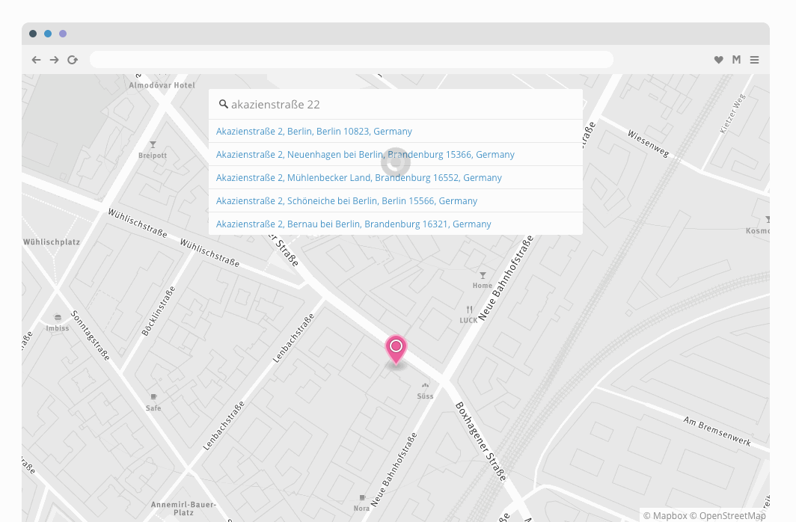

Hi! I'm
@geografa
.
I'm an
explainer
,
helper
, and
developer
@mapbox
.
Mapbox is a
mapping platform
for developers
Change the way people
move around cities
and
understand our planet
.
Set of
building blocks and tools
that make it easy to
integrate location
.
APIs

Data
Tools
Mapbox Studio
Turf.js
Turf.js
Analysis
Tippecanoe
Resources
What's in a Mapbox Studio style?
Designing the Swiss Ski style in Mapbox Studio
Designing the whaam! style in Mapbox Studio
Designing the Vintage style in Mapbox Studio
Designing the Blueprint style in Mapbox Studio
Mapbox help: Design a map
Mapping artic sea ice in a polar projection
Mapbox Streets vector tile source guide
Mapbox GL style spec
Mapbox blog posts
(filter by map design)
Tippecanoe
- tool for making maps from huge datasets
happy
mapping!
@geografa
helper
@mapbox
and we're hiring!